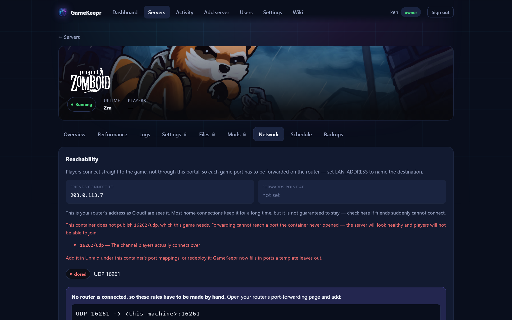

Networking and ports

The portal is a web app and hides behind a tunnel; the game servers do not. Players connect straight to the game over its own protocol, so each game port must be forwarded on the router. A reverse proxy cannot help with that, and neither can the tunnel.
The Network tab
Per server, three answers side by side:
- What friends connect to — the public IP as the outside world sees it.
- What must be forwarded — the ports this container publishes, with administrative-looking ones (RCON, web consoles) flagged and never pre-selected: forwarding a game port lets people play, forwarding an admin console puts it on the internet.
- What the router says — when a UniFi router is connected, the actual rules, with one-click creation of the missing ones.
Forwards happen at deploy time
With a router connected and LAN_ADDRESS set, a deploy opens the game's ports by itself and reports each rule in the deploy log and the activity feed. One deliberate exception: administrative ports — RCON, web consoles — are never opened by anything automatic. Those keep the deliberate click here, with the reason shown, because forwarding a game port lets people play and forwarding an admin console puts it on the internet.
The proof, router or no router
The Network tab also asks the game itself — through the public address. An answer proves the whole chain at once: container port, forward, router. This needs no router integration at all; without one, an unreachable server shows exactly which ports to forward manually. One honest caveat applies: routers without NAT hairpin cannot loop the test back from inside the network, so a failure there can be a false alarm — have a friend outside try before rewiring anything.
The check forwarding cannot do
Forwarding only acts on ports a container publishes — it is blind to a port the container never opened. GameKeepr's game registry knows what each recognised game actually needs and says outright when one is missing: "this container does not publish 16262/udp, which this game needs." That is the failure where a server looks healthy, appears in the browser, and nobody can join. Fixing it means adding the port mapping on the container (Unraid → edit container) or redeploying — new deploys get missing required ports filled in automatically.
Which network a server joins
Every server deployed through the portal joins GameKeepr's own Docker network, so the portal reaches the game by container name for player counts — no LAN addresses to keep in sync.